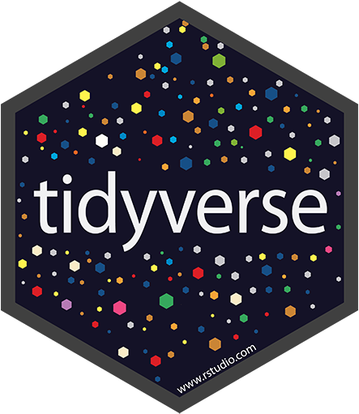

An Adventure in R: Data Basics
Overview
This tutorial is one of a series that accompanies An Adventure in Statistics (Field 2016) by me, Andy Field. These tutorials contain abridged sections from the book so there are some copyright considerations but I offer them under a Creative Commons Attribution-NonCommercial-NoDerivatives 4.0 International License,1
- Who is the tutorial aimed at?
- Anyone teaching from or reading An Adventure in Statistics may find them useful.
- What is covered?
- This tutorial looks at the basic concepts in R, such as installing packages, setting the working directory, getting help, getting data into R, creating variables, creating data frames and tibbles, reading in data files, manipulating variables within a tibble/data frame. It would be a useful tutorial to run alongside teaching based on Chapters 1 to 3 of An Adventure in Statistics.
- This tutorial does not teach the background theory: it is assumed you have either attended my lecture or read the relevant chapter in the aforementioned books (or someone else’s)
- The aim of this tutorial is to augment the theory that you already know by guiding you through fitting linear models using R and RStudio and asking you questions to test your knowledge along the way.
Story précis
Why a précis?
Because these tutorials accompany my book An adventure in statistics, which uses a fictional narrative to teach the statistics, some of the examples might not make sense unless you know something about the story. For those of you who don’t have the book I begin each tutorial with a précis of the story. If you’re not interested then fair enough - click past this section.
General context for the story
It is the future. Zach, a rock musician and Alice, a geneticist, who have been together since high school live together in Elpis, the ‘City of Hope’.
Zach and Alice were born in the wake of the Reality Revolution which occurred after a Professor Milton Gray invented the Reality Prism – a transparent pyramid worn on the head – that brought honesty to the world. Propaganda and media spin became unsustainable, religions collapsed, advertising failed. Society could no longer be lied to. Everyone could know the truth about anything that they could look at. A gift, some said, to a previously self-interested, self-obsessed society in which the collective good had been eroded.
But also a curse. For, it soon became apparent that through this Reality Prism, people could no longer kid themselves about their own puffed-up selves as they could see what they were really like – by and large, pretty ordinary. And this caused mass depression. People lost faith in themselves. Artists abandoned their pursuits, believing they were untalented and worthless.
Zach and Alice have never worn a Reality Prism and have no concept of their limitations. They were born after the World Governance Agency (WGA) destroyed all Reality Prisms, along with many other pre-revolution technologies, with the aim of restoring community and well-being. However, this has not been straightforward and in this post-Prism world, society has split into pretty much two factions
- The Chippers who have had WiFi-enabled chips implanted into their brains, enabling them to record and broadcast what they see and think in real time; upload memories for future generations into a newly-created memoryBank and live-stream music and films directly into their brains.
- The Clocktarians, followers of the old pre-Prism ways who use steam punk style technologies, who have elected not to have chips in their brains, regarded by the Chippers as backward-looking stuck in a ‘clockwork, Victorian society’.
Everyone has a star, a limitless space on which to store their digital world.
Zach and Alice are Clocktarians. Their technology consists mainly of:
- A Proteus, a device made from programmable matter that can transform shape and function simply by the owners’ wishes. Zach calls his a diePad, in the shape of a tombstone in an ironic reference to an over-reliance on technology at the expense of memory.
- A Reality Checker, a clockwork mechanism that, at the point of critical velocity, projects an opaque human head that is linked to everything and can tell you anything. Every head has a personality and Zach’s is a handsome, laid back ‘dude’ who is like an electronic friend, who answers questions if he feels like it and often winds Zach up by giving him false information. And he often flirts with Alice.
Main Protagonists
- Zach
- Rock musician in band called The Reality Enigma.
- Spellbinding performer, has huge fan-base.
- Only people living in Elpis get to see The Reality Enigma in the flesh. Otherwise all performances are done via an oculus riff, a multisensory headset for experiencing virtual gigs.
- Zach’s music has influenced and changed thousands of lives.
- Wishes he had lived pre-Revolutionary times, the turn of the 21st Century, a golden age for music when bands performed in reality at festivals.
- Kind, gentle and self-doubting.
- Believes science and maths are dull and uninspiring. Creates a problem between him and Alice as she thinks that because he isn’t interested in science, he isn’t interested in her. Leads to lots of misunderstandings between them.
- Alice
- Shy, lonely, academically-gifted – estranged from the social world until she met Zach in the college library.
- Serious scientist, works at the Beimeni Centre of Genetics.
- At 21, won the World Science Federation’s Einstein Medal for her genetics research
- Desperately wants Zach to get over his fear of science so he can open his mind to the beauty of it.
How Zach’s adventure begins
Alice has been acting strangely, on edge for weeks, disconnected and uncommunicative, as if she is hiding something and Zach can’t get through to her. Arriving home from band practice, unusually, she already home and listening to an old album that the two of them enjoyed together, back in a simpler, less complicated time in their relationship. During an increasingly testy evening, that involves a discussion with the Head about whether or not a Proteus causes brain cancer, Alice is interrupted by an urgent call which she takes in private. She returns looking worried and is once again, distracted. She tells Zach that she has ‘a big decision to make’. Before going to bed, Zach asks her if he can help with the decision but she says he ‘already has’, thanking him for making ‘everything easier.’ He has no idea what she means and goes to sleep, uneasy.
On waking, Zach senses that something is wrong. And he is right. Alice has disappeared. Her clothes, her possessions and every photo of them together have gone. He can’t get hold of any of her family or friends as their contact information is stored on her Proteus, not on his diePad. He manages to contact the Beimeni Centre but is told that no one by the name of Alice Nightingale has ever worked there. He logs into their constellation but her star has gone. He calls her but finds that her number never existed. She has, thinks Zach, been ‘wiped from the planet.’ He summons The Head but he can’t find her either. He tells Zach that there are three possibilities: Alice has doesn’t want to be found, someone else doesn’t want her to be found or she never existed.
Zach calls his friend Nick, fellow band member and fan of the WGA-installed Repositories, vast underground repositories of actual film, books, art and music. Nick is a Chipper – solely for the purpose of promoting the band using memoryBank – and he puts the word out to their fans about Alice missing.
Thinking as hard as he can, Zach recalls the lyrics of the song she’d been playing the previous evening. Maybe they are significant? It may well be a farewell message and the Head is right. In searching for clues, he comes across a ‘memory stone’ which tells him to read what’s on there. File 1 is a research paper that Zach can’t fathom. It’s written in the ‘language of science’ and the Head offers to help Zach translate it and tells him that it looks like the results of her current work were ‘gonna blow the world’. Zach resolves to do ‘something sensible’ with the report.
Zach doesn’t want to believe that Alice has simply just left him. Rather, that someone has taken her and tried to erase her from the world. He decides to find her therapist, Dr Murali Genari and get Alice’s file. As he breaks into his office, Dr Genari comes up behind him and demands to know what he is doing. He is shaking but not with rage – with fear of Zach. Dr Genari turns out to be friendly and invites Zach to talk to him. Together they explore the possibilities of where Alice might have gone and the likelihood, rating her relationship satisfaction, that she has left him. During their discussion Zach is interrupted by a message on his diePad from someone called Milton. Zach is baffled as to who he is and how he knows that he is currently discussing reverse scoring. Out of the corner of his eye, he spots a ginger cat jumping down from the window ledge outside. The counsellor has to go but suggests that Zach and ‘his new friend Milton’ could try and work things out.
Zach calls up The Head to track down who this Milton might be. Even though Professor Milton Grey – the inventor of the Reality Prism – has vanished, bearing in mind he is the only scientist from Elpis named Milton, it could be him. Perhaps just not in human form. In fact he used to work at the same place as Alice.
Packages used in this tutorial
This tutorial uses the following packages:
tidyverse(Wickham 2017)
This package is automatically loaded within this tutorial. If you are working outside of this tutorial (i.e. in RStudio) then you need to make sure that the package has been installed and loaded (see the section on Installing and loading packages).
Some RStudio basics
The tidyverse

Superficially, the tidyverse is a set of packages for R created by Hadley Wickham and his team at RStudio that are collated in a single package called tidyverse (Wickham 2017). However, it is much more than that. The packages within tidyverse (e.g., ggplot2, dplyr, readr, tidyr, and tibble) are built upon a common philosophy. This philosophy extend not just to how the packages and their functions work, but beyond that to a general philosophy of data science as outlined in Hadley’s books (Wickham 2015; Wickham and Grolemund 2017), both of which are free on-line (see resources section). Throughout these tutorials we follow this tidyverse philosophy where possible. What this means in practical terms is this: in R there are always several ways to do the same thing, where one of those ways is the tidyverse way, that’s the method we’ll use.
Keyboard shortcuts
In the previous tutorial we downloaded and set up R and RStudio. Open a new script file using the File > New File > R Script menu or by simultaneously pressing the ctrl + shift + N keys (⌘ + shift + N on a mac).
There are many things you can do more quickly using keyboard short-cuts and you can find a full list of available short-cuts here.
Tip: To see a list of the available shortcuts from within RStudio use the Tools > Keyboard Shortcuts Help menu, or simulatenously press alt + shift + K
Within these tutorials I flag keyboard short-cuts using notation such as ctrl + shift + N, which means ‘simultaneously press the control, shift and N keys’ (i.e., you should not press +!)
Installing and loading packages
In the previous tutorial we saw that R’s base functionality can be expanded by installing packages. There are two things you need to do to use a package:
- Install the package from CRAN: You need to install the package into Rs repository of packages on your computer. Every time you update or re-install R you also need to re-install packages if you want to use them.
- Load the package: to use a particular package in a current R session you need to load it from the repository.
In RStudio you can install packages using the Tools > Install Packages … menu, but it is more common to use the install.packages() function, which takes the general form:
install.packages("package_name")
in which package_name is replaced by the name of the package that you’d like installed. Note that the name of the package must be enclosed in straight quotes. For example, later in this tutorial we will use the package tidyverse. To install it, we execute:
install.packages("tidyverse")
Tip: You will find that you use certain packages a lot, so create a script that installs these packages. Whenever you update or re-install R run this script and you will have all of your favourite packages installed
Having installed a package, you then need to load it in any session where you want to use it. So, if you close R or RStudio and re-open it, or re-set your workspace, you will need to reload your packages (but not re-install them). To load a package use the library() function, which takes the general form:
library(package_name)
in which package_name is replaced by the name of the package that you’d like to use. Note that the name of the package is not enclosed in quotes. For example, later in this tutorial we will use the package tidyverse. To load it, we execute:
library(tidyverse)
Tip: Near the top of my scripts I have a section marked # load packages followed by a list of commands that load all of the packages I use in the script. (I also list them alphabetically because I’m anally retentive.) This makes it easy for me to see which packages the script relies on
In these tutorials the packages you need are pre-installed and pre-loaded so you don’t need to worry about it. However, when working in RStudio on your own assignments/data you will need to install and load the packages that you use.
The working directory
When you try to do anything (e.g., open a file) from R it will go to the directory in which R is stored on your computer. This behaviour is fine if you happen to store all of your data and output in that folder, but no-one does. One solution to this problem is to establish a working directory at the beginning of your R session. This is a default folder for R to use when it loads or saves files. A much better solution is to use RStudio projects, which we’ll explore in due course.
Getting help
One requirement of uploading a package to the CRAN is that it must have help files to tell users what the package and its functions do. To open a help page use ? followed by the name of the thing you want help with. For example to get help for the tidyverse package execute ?tidyverse. This is what the code box below shows (along with the resulting help file, which will be formatted better in RStudio than it is here.)
?tidyverseSimilarly, to get the help file for the function mean(), which is used to calculate means, you would execute ?mean. Try this in box above and press to execute the command. Now try to access the help file for the function lm() which is used to fit linear models (and which we’ll use a lot over the coming weeks). A final note on help files: they are written by statisticians and so can be somewhat impenetrable, but internet searches are often a good source of accessible help.
My recommended RStudio workflow
This section suggests a workflow that you use whenever you work on a project.
Project files
If you’d like to forget about working directories and make your work more portable then I recommend using RStudio project files. When a project file is opened it sets the working directory to be the one containing the project file. Therefore, if you work with a project file you can forget about setting working directories, the project will work on any machine you care to use, and you can share your project folder with others too and it’ll work for them.
Create a project file by selecting the File > New Project menu in RStudio to open the dialog boxes below:
Creating an RStudio project
You can choose to use an existing directory as your project directory, or create a new one.
It’s worth considering what your project directory might look like. A lot of what you end up doing with your project folders will be personal preference. I have the project folder that RStudio makes when I create the project and within it the associated project file (also created by RStudio). I tend to store the data files for a project in a folder called data, often have a folder for images (unimaginatively called images), and I usually put all of my R files such as scripts or markdown files in a folder called r_docs:
Directory structure for a small project
You can create these folders in the usual way for the operating system you use or from within RStudio:
Creating folders within RStudio
Once you have created a project file you can create script files, markdown files or notebook files from within RStudio.
Using relative paths
One of the great things about RStudio project files is that you can use relative file paths rather than absolute file paths. An absolute file path is one that specifies in full the location of a file or folder. For example, to open my_funky_data.csv using an absolute path I’d execute something like:
funky_tib <- readr::read_csv("C:/Users/andyfield/Documents/my_new_project/data/my_funky_data.csv")
The file path is the exact location of my_funky_data.csv on my hard drive. We can see from the path that the file we’re after (my_funky_data.csv) is stored in a folder called ‘data’, which is within the main project folder (‘my_new_project’), which itself is stored within my ‘Documents’ folder, which is stored under my username, in the folder ‘Users’ on my main drive (C:).
Absolute paths are a pain because they are machine dependent (or more generally environment dependent). The absolute path above won’t work for me on a different computer unless I have that computer set up identically. It also won’t work for collaborators unless their user name is also andyfield and the structure of folders on their hard drive exactly matches mine. They also take a really long time to type. Absolute paths suck. Relative paths, on the other hand, allow you to specify files relative to a fixed point. Within an RStudio project the fixed point is the project folder. Therefore, to load the same data file using a relative path we need only specify:
funky_tib <- readr::read_csv("../data/my_funky_data.csv")
Compare this with the absolute path and note that I’ve replaced
C:/Users/andyfield/Documents/my_new_project/ with ../data/. The two dots take us up a level from the r_docs folder (where the notebook file that contains the command is saved). In other words, it takes us into the main project folder. From there, /data/ takes us into the folder called data. If my_markdown.Rmd were stored in the project folder (rather than being in a subfolder) we would need only a single dot:
funky_tib <- readr::read_csv("./data/my_funky_data.csv")
The here() package
If you find relative paths confusing consider using the here package, which you can install by executing: install.packages('here')
and load using: library(here)
The here package has a function called here() that uses a set of sensible rules to work out what the working directory is. If you use an RStudio project (like I’ve told you to) here() can easily locate the working directory because it’s the project directory. Let’s assume that the location of your project is C:/Users/andyfield/Documents/my_new_project/, executing the function will return that location:
> here::here()
[1]"C:/Users/andyfield/Documents/my_new_project"If you type the location of a file within the project folder into the function, it appends this text to the location of the project directory, to give you the absolute path. For example, if we want to access the file called ‘my_funky_data.csv’ which is within a folder called ‘data’ within our project folder, we could get the filepath to this file by executing:
> here::here("data/my_funky_data.csv")
[1] C:/Users/andyfield/Documents/my_new_project/data/my_funky_data.csv"The here() function generates the filepath for the project directory each time it is called, so if you move your project folder to another machine or a different location on the same machine your code will still work. For example, previously we looked at loading some data using a relative path:
funky_tib <- readr::read_csv("../data/my_funky_data.csv")
We can avoid the relative path by using:
funky_tib <- readr::read_csv(here::here("data/my_funky_data.csv"))
To sum up, we use here() to create a filepath to the file we want to read into R, and use readr::read_csv() to open that file.
Objects and functions
Overview
Commands in R are generally made up of two parts: objects and functions, which are separated by the assignment operator <-. Think of the assignment operator as meaning ‘is created from’. As such, the general form of a command is:
Object <- instructions
Which means ‘object is created from some instructions’. These instructions typically involve the use of functions. A function is a bit of code that someone has written (and that you can write yourself) that typically have at least one argument and an output. Functions have a name followed by parenthesis, for example, ggplot(), mean() and plot(). When you load a package into R you are loading a collection of functions that someone has written that do things using R.
An object is anything created in R. It could be a variable, a collection of variables, a statistical model etc. Objects can be single values (such as the mean of a set of scores) or collections of information; for example, when you run an analysis, you create an object that contains the output of that analysis, which means that this object contains many different values and variables. Functions are the things that you do in R to create your objects.
Tip: Simultaneously press the alt + − keys to insert the assignment operator (<-)
Having written a command you execute it by (assuming you’re working with a script file) selecting it and simultaneously pressing ctrl + ↩︎ (⌘ + ↩︎ on a mac). (If you want to slow yourself down you can click  instead of the keyboard short-cut.) The results of the executed code will appear in the console.
instead of the keyboard short-cut.) The results of the executed code will appear in the console.
Let’s write a command to create an object containing the first names of the members of Zach’s band The Reality Enigma (Zach, Nick, Joel, Jessika). We’re going to use the in-built function c() to ‘collect’ these names together, and call the object name. Note that text values need to be entered in straight (not curly) quotes. To do this we need to execute the following code (which I have already written into the code box below):
name <- c("Zach", "Nick", "Joel", "Jessika")name <- c("Zach", "Nick", "Joel", "Jessika")
nameTo execute this code (within this tutorial), click . It will seems as though nothing has happened but in fact R has created an object called name that contains the four names. To see this object you need to type the name of the object and run that code. To see this in action, on the second line of the code box type the name of the object (name) and click again. What happens?
Hopefully you saw a list of the four names: R shows you the contents of the object name. Try this out for yourself by first creating an object called my_friends that contains a few of your best friend’s names, then inspect that object by executing its name.
# Obviously your friends will have different names but, an example would be:
my_friends <- c("Zoe", "Mark", "Ben")
my_friendsDisambiguating functions
You can refer to a function directly, to use a general example:
function()
or you can include a reference to the package (see the next section), again using a general form:
package::function()
For example, you can use the ggplot() function from the ggplot2 package within a command by typing either of these:
ggplot() ggplot2::ggplot()
Many people do not include the package name when they write code because it involves more typing, but there are two good reasons to. First, you will occasionally stumble across two functions in two different packages that have the same name. For example, there is a recode() function in both the Hmisc and car packages. If you have both packages loaded and you try to use recode(), R won’t know which one to use or will guess (perhaps incorrectly). This quite often results in an error. If you always specifying the package as well as the function then R (and everyone else) will always know which function you’re using. For example, if we want to use the recode function in the car package we would use:
car::recode()
but to use the one in Hmisc we would use:
Hmisc::recode()
Second, it can often be difficult to remember which functions come from which packages but writing the apckage names really helps you to remember which packages you need to load to use functions that you commonly use.
Style
You will make your life easier if you organise and write your scripts following consistent style. In general I recommend following Hadley Wickham’s tidyverse style guide. (Full disclosure, I have a lot of habits that are inconsistent with this style guide that I find hard to shake, so feel free to point out places where I inadvertently try to inflict those bad habits on you in my code!) The style guide has a lot to take in, so a few key tips are:
- Use lower case when naming things: R is case sensitive so it will treat myData as a completely different object to mydata. One of the most common reasons why your code won’t run will be because you forgot to capitalize an object that you capitalized when you created it. The simplest solution is to use lower case all of the time when naming objects.
- Use underscores to separate words: when creating objects it improves readability if you use underscores to distinguish words. For example, you might import the data relating to mathematical achievement as maths_data, which is easier to read than mathsdata. (I used to use camelBack, which results in mathsData which is easy to read but introduces a capital letter. I am trying to unlearn this habit!)
- Avoid long names: naming something great_experiment_to_test_whether_listening_to_heavy_metal_improves_your_statistical_ability_data is certainly descriptive but you’re going to really regret it when you want to refer to that object again - think of the potential for typos which would mean R doesn’t recognise the object, not to mention the time wasted in typing it out. Keep it short but meaningful.
- consider consistent suffixes: Although not in the style guide, and not essential, I find it useful to have a set of suffixes to indicate the types of objects that I have created. For example, you might use dat for data frames, tib for tibbles and m or mod for model, and out for output. For example, I might create these objects:
- maths_dat: data frame containing my data on mathematical achievement
- maths_tib: tibble containing my data on mathematical achievement
- maths_3x_m: object specifying a model in which maths achievement was predicted from 3 variables (i.e., 3 Xs).
- maths_3x_out: object containing the summary output from the above model.
- Comment: You can annotate your code by prefixing text with #. This enables you to describe what you are doing. You have no idea how helpful this can be when you revisit code 6 months later and can’t remember what you were trying to do. It’s a really good habit to get into.
- Spacing: Your code will be much easier to read if you put spaces around operators such as ‘+’, ‘==’, ‘<-’. Put spaces after commas (but not before), but don’t put them around :, :: and ::: (because these have special functions in R).
Good:
# object containing the first names of the members of The Reality Enigma
name <- c("Zach", "Nick", "Joel", "Jessika")This example shows good practice. Note how I have annotated what I am doing by using ‘#’, put spaces around the assignment operator (<-) and after commas, used lower case and an underscore for my object name and kept the name short.
Bad:
First_names_of_The_Reality_Enigma.members<-c("Zach", "Nick", "Joel", "Jessika")This example shows bad practice. Note that I have not annotated what I am doing, there are no spaces around the assignment operator (<-) or after commas, I have some capital letters in my object name, have not been consistent with how I separate words in the object name, and have a name that is unnecessarily long.
Creating variables
Variable types
You can enter your data directly into R and it’s worth knowing how to do that, although we will later look at importing data from other software. This is a list of some variable types that you are likely to use:
int: variables containing integers.dbl: variables containing doubles, or real numbers.chr: variables containing characters, or strings (i.e. text).lgl: variables that contain only the logical values of TRUE or FALSE.fctr: variables that represent categories with fixed numeric values (so called factors, for example a variable where you have coded biological sex as 0 = male, 1 = female)date: variables that contain dates.
Creating character variables
We already created a character variable when we created the object enig_dat that contained the names of Zach’s band members.
Creating numeric variables
Integer and double variables are created in the same way as character variables in that we just list the numbers within the function c() and separate them by commas. For example, imagine the ages of Zach, Nick, Joel, and Jessika were 27, 26, 23 and 25 respectively, we can collect these ages into an object called age using the code in the box. Note that, unlike text, numbers do not need to be enclosed in straight quotes. Add a line to view the contents of the age object.
age <- c(27, 26, 23, 25)age <- c(27, 26, 23, 25)
ageCreating factors
Suppose we wanted to enter the biological sex of the band members. We could enter this information as text (“Male”, “Male”, “Male”, “Female”), however, it is common to code this information within a factor or coding variable. A factor uses numbers to represent different categories of entities. These categories could be levels of a treatment variable in an experiment, different groups of people, different geographic locations, different organisations, etc.
There are several ways to create factors in R. The first is to enter numeric values and then convert these values to a factor using the factor() function, the second is to enter the text and convert it to a factor using the as_factor() function from the forcats package (which is part of tidyverse). We’ll use each in turn to create a factor representing the biological sex of the band members.
To use the base R method, we first create a variable containing the numerical codes, we then convert this variable to a factor using the built-in factor() function. Imagine we want to use 0 = male and 1 = female. Create a variable called sex that contains the appropriate number to represent the sex of Zach, Nick, Joel, and Jessika (in that order) and then view it.
# Remember that the first three people are males, so need to be assigned 0, and the last person is female and needs to be assigned 1. The code box should, therefore, contain (the second line just views the contents of the object we created in the first line):
sex <- c(0, 0, 0, 1)
sexHaving done this we convert the variable to a factor using the built-in factor() function, which takes the general form:
factor(variable_name, levels = c(x,y, … z), labels = c("label_1", "label_2", … label_n"))
This looks a bit scary, but let’s break it down:
factor(variable_name)is all you really need to create the factor — in our casefactor(sex)would do the trick.levels = c(1, 2, 3, 4, …): we need to tell R which values we want to use to denote different groups and we do this with the levels = argument. We can use thec()function to list the values we have used (c(0, 1)) or if we have used a regular series such as 0, 1, 2, 3, 4 we can use the shorthandx:yin which the colon means ‘all the values between’, so this would mean ‘all of the values between x and y’. For example,1:4is the same asc(1, 2, 3, 4)and0:6is the same asc(0, 1, 2, 3, 4, 5, 6). In our case, we used 0 and 1 to denote the two categories, so we could specify this aslevels = 0:1orlevels = c(0, 1).labels = c("label_1", "label_2", … label_n"): The final step is to assign labels to these levels using labels = c(“label”, …). Again, we usec()to collect together the labels that we wish to assign. The labels must be ordered consistent with the numeric levels, and you must provide a label for every level. In our case, 0 corresponds to male and 1 to female, so we would want to specify labels aslabels = c("Male", "Female").
Putting all of this together we can convert sex to a factor using:
sex <- factor(sex, levels = 0:1, labels = c("Male", "Female"))
Execute the expression in the code box to create and then inspect the object sex. Having done that, on the next two lines add the code to convert sex to a factor and inspect it again. How has it changed?
sex <- c(0, 0, 0, 1)
sexsex <- c(0, 0, 0, 1)
sex
sex <- factor(sex, levels = 0:1, labels = c("Male", "Female"))
sexHopefully you’ll see that the numbers have now turned into the levels that you specified.
Method two is to create a character variable and then use the as_factor() function to convert it. For example, we could execute:
sex <- c("Male", "Male", "Male", "Female")
sex <- forcats::as_factor(sex)The first command creates a character variable called sex containing the words male and female, the second command recreates the object sex by converting the original variable to a factor. Notice that with this method we don’t specify the levels of labels of the factor. This is done automatically, ordering the levels by the order they appear in the data (in this casel level 1 will be Male and level 2 Female). You can see this if you inspect the variable by executing its name. Try out this code:
sex <- c("Male", "Male", "Male", "Female")
sex <- forcats::as_factor(sex)
sexsex <- c("Male", "Male", "Male", "Female")
sex <- forcats::as_factor(sex)
sexIf we don’t like the order of factor levels we can use the fct_relevel() function (also from the forcats package) to change the order. For example, to reverse the order of the levels of sex we would execute:
sex <- forcats::fct_relevel(sex, "Female", "Male")
The code box below repeats the code from the previous box, try executing it and then adding the code to relevel the factor so that Females are the first level.
sex <- c("Male", "Male", "Male", "Female")
sex <- forcats::as_factor(sex)
sexsex <- c("Male", "Male", "Male", "Female")
sex <- forcats::as_factor(sex)
sex <- forcats::fct_relevel(sex, "Female", "Male")
sexThe pipe operator %>%
The pipe operator %>% from the mgrttr package can be used to link functions together. This is very useful for creating clear, readible code. mgrttr is part of the tidyverse package so that needs to be loaded for it to work.
In the previous example we created a factor in two or three steps: we created a numeric or character variable, converted it to a factor, and (if needed) changed the order of the levels. Rather than writing these steops in separate commands, we can link the operations using the pipe (%>%). Everything on the left of the pipe is carried forward to the right of the pipe. Execute the code below and see the result:
sex <- c("Male", "Male", "Male", "Female") %>% forcats::as_factor()
sexWe first create an object called sex which is made up of the values Male and Female, then the pipe %>% carries this object forward into the as_factor() command. Note that within the as_factor command we don’t need to specify the variable sex (like we did previously) because it is carried forward through the pipe and into as_factor() (which is otherwise specified as before). As such, we have created the factor using a single command that connects two functions using a pipe.
We could continue the pipe into a third function to relevel the factor:
sex <- c("Male", "Male", "Male", "Female") %>%
forcats::as_factor() %>%
forcats::fct_relevel("Female", "Male")This command creates sex by specifying the sex of each member as a word, then piping these words into as_factor() to convert them to a factor, which is then piped into the fct_relevel() function to change the order of the levels.
Try out this code in the code box below.
sex <- c("Male", "Male", "Male", "Female") %>%
forcats::as_factor() %>%
forcats::fct_relevel("Female", "Male")
sexZach, Nick, Joel, and Jessika play guitar, drums, guitar and bass respectively. In the code box use a pipe to create a factor called instru that codes the instrument played by each band member.
# If you code guitar as 0, drums as 1 and bass as 2 then this code will do the job (the second line views the contents of the object we created in the first line):
instru <- c("Guitar", "Drums", "Guitar", "Bass") %>%
forcats::as_factor()
instruThe rep()function
The rep() function can be useful when creating factors, it takes the general form:
rep(number to repeat, how many repetitions)
For example, rep(1, 5) will repeat the number 1 fives times and rep("Male", 3) will repeat the word Male three times. When creating factor variables with a lot of cases this can save time compared to typing loads of 1s and zeros. In the code box can you create the numeric variable sex but using the rep() function instead of c(0, 0, 0, 1)?
# We can use the rep() function to replace the three zeros by typing rep(0, 3) as below (the second line views the contents of the object we created in the first line):
sex <- c(rep(0, 3), 1)
sexCreating logical variables
We could express biological sex as a logical value by indicating whether the value Female is true of false. For example, we could create a variable is_female that contains the values c(FALSE, FALSE, FALSE, TRUE) for our band members. Try this below:
is_female <- c(FALSE, FALSE, FALSE, TRUE)
is_femaleClear the box, and try using the shorthand of c(F, F, F, T) instead of c(FALSE, FALSE, FALSE, TRUE). You should find that it doesn’t change the result because R will accept a capital T as meaning True and a capital F as meaning False within this context.
Data frames and Tibbles
We have looked at how to create variables, but what if we want to create a tabulated data set (i.e., in the kind of format that Excel or SPSS Statistics uses) with columns representing variables and rows representing entities? R stores tabulated data in one of two ways:
- Data frames: this is the default method
- Tibbles: these are a special type of data frame that are modernised (i.e. remove a few historic behaviours of data frames that sometimes get in the way)
We’ve created a lot of variables relating to Zach’s band-mates so lets collect some of them into a data frame. To do this we want to create an object that is a data frame using the data.frame() function. We put into this function the names of any variables that we have already created (in this tutorial we have created the variables name, age, sex, instru and is.female). The code below creates a data frame called enigma_dat (notice I have used the suffix ’_dat’ to indicate that the object is a data frame, which isn’t mandatory but is consistent with the style advice earlier in this tutorial), which is made up of the name, age and sex of the members of Zach’s band, The Reality Enigma. The second line of code inspects this data frame. Click to see what this code creates.
name <- c("Zach", "Nick", "Joel", "Jessika")
age <- c(27, 26, 23, 25)
sex <- c(0, 0, 0, 1) %>% factor(levels = 0:1, labels = c("Male", "Female"))
instru <- c(0, 1, 0, 2) %>% factor(levels = 0:2, labels = c("Guitar", "Drums", "Bass"))
is_female <- c(FALSE, FALSE, FALSE, TRUE)
enigma_dat <- data.frame(name, age, sex, instru, is_female)enigma_dat <- data.frame(name, age, sex)
enigma_datYou should see that we have collected together the variables name, age and sex into columns. Because, when we created these variables, we consistently entered the data in the order of Zach, Nick, Joel, and Jessika each row represents the data for each person. For example, we can see that Zach is 27 and male, and Jessika is 25 and female.
Use the code box below to create a data frame called enigma_dat that contains all of the variables we’ve created (name, age, sex, instru, and is_female), and inspect it.
enigma_dat <- data.frame(name, age, sex, instru, is_female)
enigma_datWith data frames with large numbers of rows, inspecting them can be difficult - especially if they contain more information than R can display in the Console. In these cases consider using the View() function (note that the V is capital). For example, View(enigma_dat) will open up the data frame in a spreadsheet-like window within RStudio.
Tibbles are data frames that have been slightly tweaked. They are part of the tidyverse package (so, if you want to create one that needs to be loaded). Most users won’t particularly notice the difference between a data frame and tibble. However, because I am trying to follow the tidyverse ethos I will, in general, use tibbles. To create a tibble instead of a data frame make sure the tidyverse package is loaded and use the tibble() function instead of the data.frame() function. In the code box below, create a tibble called enigma_tib (notice I have used the suffix ’_tib’ to indicate that the object is a tibble) that contains all of the variables we’ve created (name, age, sex, instru, and is_female), and inspect it.
enigma_tib <- tibble(name, age, sex, instru, is_female)
enigma_tibYou should hopefully see that, superficially, the tibble is no different to the data frame.
Reading and writing data files
Files in the working directory/project folder
Most likely you will find it easier to input data into a spreadsheet software (e.g., Microsoft Excel, OpenOffice Calc, Numbers, NeoOffice, Google Sheets etc.). I don’t recommend using SPSS Statistics for data entry (it is quite slow compared to, say, Excel). Although you can read data directly from an Excel or SPSS file it is generally more straightforward to export data from these packages into the comma-separated values, CSV, format. There are native functions for reading csv files (e.g., read.csv()) but the tidyverse way is to use the functions from the readr package that loads with tidyverse:
read_delim()andwrite_delim(): read and write (respectively) a text file specifying how values are delimited with the argumentdelim = "". For example, you could read a csv file usingread_delim(file_name, delim = ",").read_csv()andwrite_csv(): special cases of the above that assume comma separated values.read_csv2(): special cases ofread_delim()that assume semi-colon separated values.read_sav()andwrite_sav(): read and write SPSS Statistics files. (You need to executelibrary(haven)to use these functions.)read_excel(): read Microsoft Excel files (both .xls and .xlsx format). (You need to executelibrary(readxl)to use this function.)
At a simple level you insert the file name into the function. For example, download the csv file ais_ch03_ha.csv, which contains the data that Prof Pincus uses to help Zach explore what attributes women look for in men in Chapter 3 of the book. These data are a subset of data from a study by Ha, Overbeek, and Engels (2010). Assuming that you save this file into the working directory or your project folder, you could load it using:
ha_tib <- readr::read_csv("ais_ch03_ha.csv")
This command creates a tibble called ha_tib from the file. It assumes that the first row of the file contains variable names (which it does). If this is not the case then override the defaults by including header = FALSE:
ha_tib <- readr::read_csv("ais_ch03_ha.csv", header = FALSE)
Files not in the working directory
If the file is not in your working directory then you need to tell RStudio where it is. Assuming you’ve followed my advice and used an RStudio project, then the least confusing way to open it is to use the here() function:
ha_tib <- here::here("/data/ais_ch03_ha.csv") %>% readr::read_csv()
Using variables
Referencing variables
Let’s assume you have loaded the csv file from the previous section into a tibble called ha_tib. Using what you already know, inspect the tibble using the code box.
ha_tibYou can list names of variables within a tibble (or data frame) using the names() function. Just insert the name of the tibble into the function without quotes (e.g., names(name_of_tibble)). Use the code box to list the names of the variables in ha_tib.
names(ha_tib)If you want to reference a variable from a tibble (or data frame) you use the general form:
name_of_tibble$name_of_variable
For example, to access the variable called humour within the tibble ha_tib we would use:
ha_tib$humour
The $ can be thought of as ‘in’, so you could read the command as ‘the variable called humour in the tibble called ha_tib’. Try executing this command in the code box and see what happens.
ha_tib$humourYou should see a list of numbers: these are the scores that make up the variable humour
Creating variables from variables
We can add variables (columns) to a tibble using the mutate() function from the dplyr package (which is part of tidyverse). Often when doing this we want to use operators to manipulate variables: for example we might want to use + to create a new variable by adding two existing variables together. Table 1 shows a list of commonly-used operators.
| Operator | What_it_does |
|---|---|
| + | Adds things together |
| - | Subtracts things |
| * | Multiplies things |
| / | Divides things |
| ^ or ** | Exponentiation (i.e., x^2 or x**2 is x squared |
| < | Less than |
| <= | Less than or equal to |
| > | Greater than |
| >= | Greater than or equal to |
| == | Equals (note that ‘==’ is used rather than the conventional ‘=’) |
| != | Not equal to |
| !x | Not x |
| x | y | x OR y (e.g., name == “Zach”|“Jessika” means ‘the variable name is equal to either Zach or Jessika’) |
| x & y | x AND y (e.g., age == 27 & name == “Zach” means ‘the variable age is equal to 27 and the variable name is equal to James) |
| isTRUE(x) | Test if x is TRUE |
| sqrt(x) | Take the square root of x (e.g., sqrt(9) returns 3) |
| log(x) | Take the natural log of x |
| mean(x) | Comopute the mean of x |
Using the pipe we could create a new variable that contains the average scores across the variables humour and kind by executing:
ha_tib <- ha_dat %>%
dplyr::mutate(mean_hum_kind = (humour + kind)/2)let’s break this command down:
ha_tib <-tells R to re-create the tibble ha_tib from whatever comes nextha_tib %>%starts to recreate the tibble from the original ha_tib tibble. The pipe operator tells R that there’s some processing on that tibble to followdplyr::mutate(mean_hum_kind = (humour + kind)/2)uses themutate()function to add a variable called mean_hum_kind which contains the scores of humour and kind added together and divided by two. (Inside mutate is one of the rare occasions you will use a single = sign in R).
In the code box, add a variable called humour_sq to the ha_tib tibble that is the variable humour squared. Then view the tibble.
ha_tib <- ha_tib %>% dplyr::mutate(humour_sq = humour^2)
ha_tibFiltering tibbles
The participants in this study were aged between 15 and 18. Imagine we are interested only in the responses of people aged 16 or over. We can extract these data using the filter() function from the dplyr package in tidyverse. Using the pipe we could create a new tibble that contains only the 16 to 18 year olds as follows:
ha_1618_tib <- ha_tib %>% dplyr::filter(age >= 16)
let’s break this command down:
ha_1618_tib <-sets the name for the new tibble and the assignment operator indicates to create it from what followsha_tib %>%starts by taking the ha_tib tibble but the pipe operator means that some conditions are to followdplyr::filter(age >= 16)used the filter function and sets a condition to select cases if the variable age is greater than or equal (>=) to 16.
Try this in the code box, and inspect the tibble afterwards (by executing its name).
ha_1618_tib <- ha_tib %>% dplyr::filter(age >= 16)
ha_1618_tibWe could achieve the same thing in other ways. For example:
ha_1618_tib <- ha_tib %>% dplyr::filter(age != 15)
Does the same thing but sets the filter to be that the variable age is not equal (!=) to 15, which will have the effect of excluding the 15 year olds. Try this in the code box and inspect the tibble.
ha_1618_tib <- ha_tib %>% dplyr::filter(age != 15)
ha_1618_tibIf we wanted only the 15-year olds, we could do this by executing:
ha_15_tib <- ha_tib %>% dplyr::filter(age == 15)
to create a tibble called ha_15_tib that contains cases in ha_tib where the variable age is equal to (==) 15. Try this in the code box and inspect the resulting tibble.
ha_15_tib <- ha_tib %>% dplyr::filter(age == 15)
ha_15_tibIn the code box, create a tibble called kind_max_tib that contains only the participants within the ha_tib tibble who rated kindness (the variable kind) with the maximum score of 10. Inspect the tibble by executing its name.
kind_max_tib <- ha_tib %>% dplyr::filter(kind == 10)
kind_max_tibOther resources
Statistics
- The tutorials typically follow examples described in detail in Field (2016), so for most of them there’s a thorough account in there. You might also find Field, Miles, and Field (2012) useful for the R stuff.
- There are free lectures and screen casts on my YouTube channel
- There are free statistical resources on my website www.discoveringstatistics.com
R
- Information about the tidyverse package.
- R for data science is the open-access version of the book by tidyverse creator Hadley Wickham (Wickham and Grolemund 2017). It covers the
tidyverseand data management. - ModernDive is an open-access textbook on R and RStudio
- RStudio cheat sheets
- RStudio list of online resources
- SwirlStats is a package for R that launches a bunch of interactive tutorials.
References
Field, Andy P. 2016. An Adventure in Statistics: The Reality Enigma. Book. London: Sage.
Field, Andy P., Jeremy N. V. Miles, and Zoe C. Field. 2012. Discovering Statistics Using R: And Sex and Drugs and Rock ’N’ Roll. Book. London: Sage.
Ha, Thao, Geertjan Overbeek, and Rutger C. M. E. Engels. 2010. “Effects of Attractiveness and Social Status on Dating Desire in Heterosexual Adolescents: An Experimental Study.” Journal Article. Archives of Sexual Behavior 39 (5): 1063–71. https://doi.org/10.1007/s10508-009-9561-z.
Wickham, Hadley. 2015. Ggplot2: Elegant Graphics for Data Analysis. Book. 2nd ed. New York, NY: Springer.
———. 2017. “Tidyverse: Easily Install and Load ’Tidyverse’ Packages.” Journal Article. R Package Version 1.1.1. https://CRAN.R-project.org/package=tidyverse.
Wickham, Hadley, and G. Grolemund. 2017. R for Data Science. Book. Sebastopol, CA: O’Reilly.
Basically you can use this tutorial for teaching and non-profit activities but do not meddle with it or claim it as your own work.↩︎